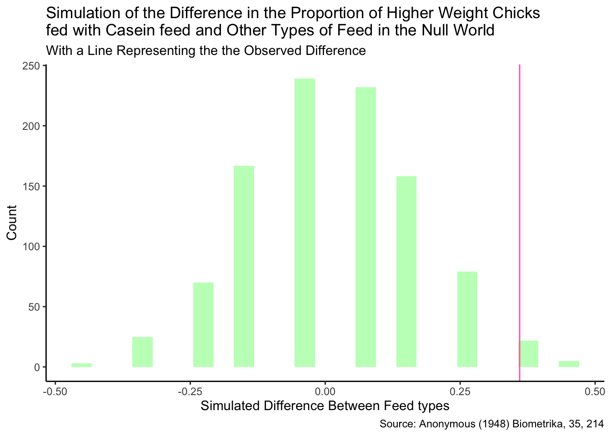

Casein is the main protein present in cow’s milk. It is good for building muscle and growth, as cow babies grow up on this protein. It has been shown to have many benefits for humans, especially for bodybuilders and people in recovery from injury. It is likely to have good growth benefits for other animals as well. One study, looked at growth rates for chicks who were fed different types of feed, one of which was supplemented with casein. By comparing weights of the chicks on casein vs. other feed, we can see the effect casein has on a chicks growth.
Hypothesis
Null hypothesis: Feeding your chicks casein will have no affect on their weight compared to other types of feed
Alternative hypothesis: Feeding your chicks casein will have an affect on their weight.
Specifically, I think casein will make chicks heavier on average.
Creating the dataset
I am starting out by using the chickwts data set described above. I am making a tibble for me to use in testing my hypothesis. For the purposes of this analysis I am classifying the chick weights as high if they are in the top 50% of weights and low if they are in the bottom 50% of weights. I am also lumping the other types of feed into one category to be my “control”. Essentially this will compare the weights of the chickens on casein feed to the weights of the chickens on other feeds.
# A tibble: 71 × 2
feed weight
<fct> <fct>
1 other LOW
2 other LOW
3 other LOW
4 other LOW
5 other LOW
6 other LOW
7 other LOW
8 other LOW
9 other LOW
10 other LOW
# ℹ 61 more rows
Note: The variable “feed” has two levels, other and casein, while the variable “weight” has two levels, high and low.
Next, I can start the analysis…
Observed Difference
First, I wrote a code to calculate the observed difference between the proportion of higher weight chicks between groups for the treatment (casein) and control (other) groups.
# A tibble: 2 × 2
feed prop_high
<fct> <dbl>
1 casein 0.75
2 other 0.390
observed_diff_cas
[1] 0.3601695
It is also interesting to note that we can turn the above code into a function. For simple randomized studies, specifically those with a treatment variable consisting of two levels and a categorical two level outcome, we can create a function that calculates the observed difference and shows the observed proportions of the outcome.
create_summary_obsdiff <-function(data, treatment, outcome, prop) { sum <- data |>group_by({{treatment}}) |>summarise(prop_yes =mean ({{outcome}}== prop)) observed_diff <- sum [[2]][1] -sum[[2]][2]print(sum)observed_diff } create_summary_obsdiff(casein_final, feed, weight, "HIGH")
# A tibble: 2 × 2
feed prop_yes
<fct> <dbl>
1 casein 0.75
2 other 0.390
[1] 0.3601695
We could do this with the dolphin data set that we were working with in class where the data would be dolphin data, the treatment would be treatment with levels Dolphin and Control, the outcome would be improve with levels yes and no, and the prop would be “Yes”. Outcome refers to the response variable you will be examining and prop refers to what you will be calculating the proportion of within that outcome. Usually we look at positive improvements or the presence of something, so I named this variable prop_yes.
# A tibble: 2 × 2
treatment prop_yes
<chr> <dbl>
1 Control 0.2
2 Dolphin 0.667
[1] -0.4666667
Create the Null World
Next, we will create a null world that shuffles the feed or treatment among the chicks. We can calculate the simulated difference, which is the difference in proportion of higher weight chicks if there was no dependence on feed.
Finally we can use these simulated differences to calculate how rare getting our observed difference would be.
null_world_cas <-tibble(simulated_diff_cas = simulated_diff_cas)ggplot(null_world_cas, aes(x=simulated_diff_cas)) +geom_histogram(bins=25, fill="darkseagreen1")+geom_vline(xintercept= observed_diff_cas, color="hotpink") +theme_classic() +labs(x="Simulated Difference Between Feed types", y="Count",title="Simulation of the Difference in the Proportion of Higher Weight Chicks fed with Casein feed and Other Types of Feed in the Null World", subtitle="With a Line Representing the the Observed Difference", caption="Source: Anonymous (1948) Biometrika, 35, 214")

Looking at the above plot, we can see our simulated null world approximately follows the normal curve, with the mean around zero. This would make sense if there is no difference in types of feed in this simulation because the average weight should be about the same for both groups. Assuming the casein feed has no affect on chick weights, the bulk of the simulated differences lie between -0.25 and 0.25. The pink line represents our observed difference, which is possible to obtain if casein has no affect on chick weight, but it is more unlikely.
We can also calculate the p-value which is shown above. The p-value represents the chance that we would get an observed difference that is equal to or above the difference that we got. Because our p-value is less than 0.05, we can reject the null hypothesis that casein feed has no effect on chick weights compared to other types of feed.
Further Study
The p-value can also be analyzed by a two sided test, instead of a one sided test. This would take into account the probability of getting the negative of our observed difference and lower. This would raise our p-value. It would be interesting to study chicks with a more consistent control group like the most common type of feed, instead of random feeds lumped together. It would also be interesting to pair this with an analysis of average chick weights at certain points in life in order to get a better understanding of a higher and lower weight chick. The data would also be more accurate with a larger sample size.